Tutorial 3 of 15
Laminar flow in a pipe
Flow inside a shape: a straight pipe whose result you can check by hand.
Slow flow through a straight pipe has an exact solution, known since the 1840s: far enough from the entrance, the speed across the pipe is a parabola whose peak is twice the average speed. That makes it a good second case: you learn how to simulate the flow inside a shape, and you can tell whether the answer is right.
The pipe is 0.2 m in diameter and 2 m long. The fluid enters at 1 m/s and has a viscosity of 0.004 m²/s, so the Reynolds number is 1 × 0.2 / 0.004 = 50.
What you will learn
- let the base mesh cut a shape open to make an inlet and an outlet
- tell EasyFOAM that the fluid is inside the shape
- set an inlet velocity and an outlet pressure
- stop a steady run automatically when it has converged, and compare with theory
Computer time: about half a minute for the mesh and a minute for the run, on four cores.
1Open the example
Start EasyFOAM. This case is one of the examples on the start page: it comes with every setting filled in, and this tutorial walks through each of them so that you understand the case and could build it yourself.
- Click Laminar flow in a pipe.

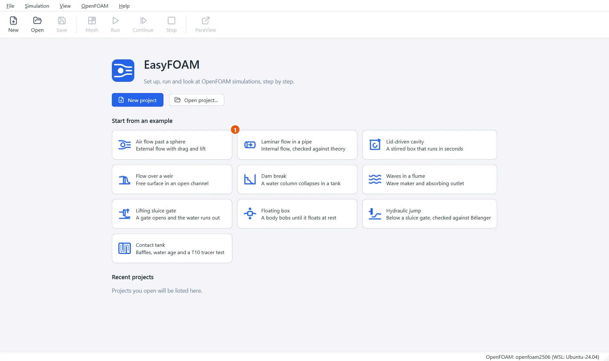
2Name the project
The project is an ordinary folder that EasyFOAM creates for you.
- Type a name, for example
pipe. - Click Create project.

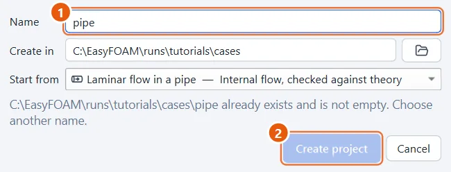
3The pipe is a cylinder
The only shape is a cylinder called tube. Notice that it is longer than it needs to be: it runs from x = −0.5 m to x = 2.5 m, but the mesh will only cover 0 to 2 m. The two ends of the mesh cut the cylinder open, and those cuts become the inlet and the outlet.
- The shape tube is selected and shown in the 3D view.
- Axis start and Axis end: the two ends of the cylinder's centre line.
- Radius:
0.1m. - Surface refinement
1: cells at the pipe wall are half the size of the base cells.

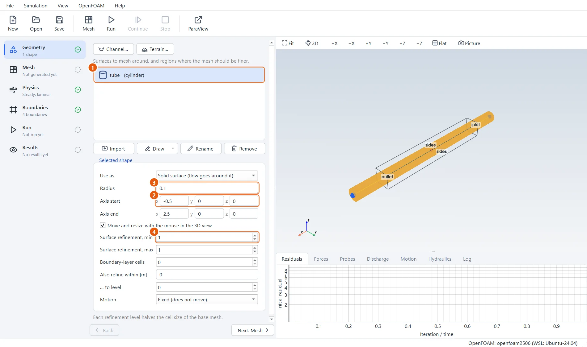
4The base mesh and where the fluid is
The base mesh is a box of cubes a little wider than the pipe and exactly as long as the part we want to simulate. One setting matters most here: by default EasyFOAM keeps the mesh around the shapes. For a pipe we want the opposite.
- The box runs from x =
0to2and is0.25m wide and high. - Cells:
80,10,10, which makes cubes of 25 mm. - The fluid is: inside tube.
- Click Mesh in the toolbar (or press F5).

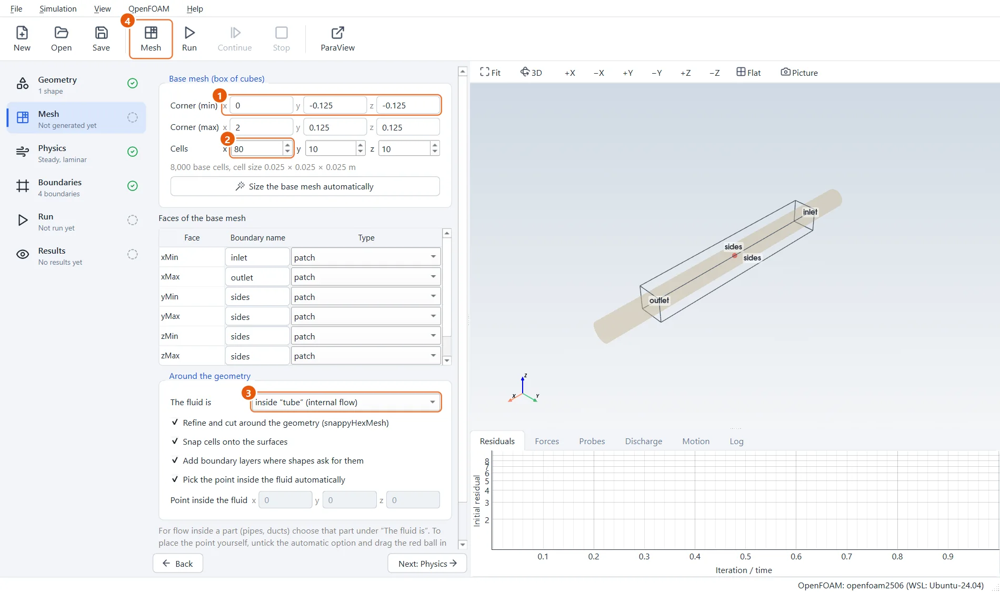
5The mesh of the inside
After about half a minute the mesh appears: only the inside of the pipe is left, with finer cells along the wall. The boundaries are named after where they came from: inlet and outlet are the two end faces of the base mesh, tube is the pipe wall.
- The Mesh step shows the number of cells, about 24,000.
- The boundaries are listed with their colours in the corner of the view.

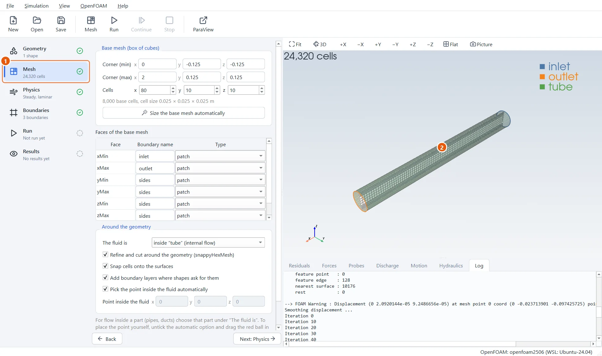
6A thick fluid, flowing slowly
The flow is steady and laminar. The fluid is an invented one, thick enough to keep the Reynolds number at 50.
- Turbulence: Laminar.
- Fluid: Custom.
- Kinematic viscosity:
0.004. - Initial velocity:
1,0,0. Starting close to the answer saves iterations.

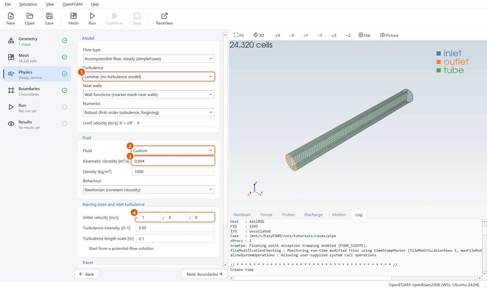
7The inlet
At the inlet the fluid enters with the same speed everywhere across the pipe.
- Select inlet.
- Condition: Velocity inlet.
- Velocity:
1,0,0.

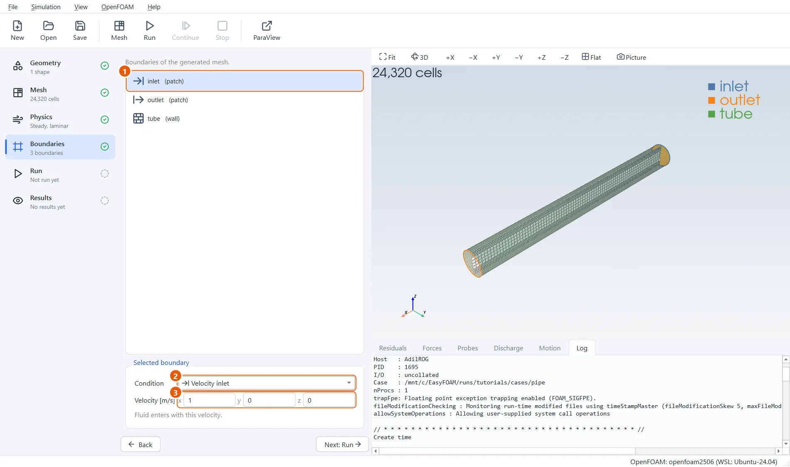
8The outlet and the wall
At the outlet the pressure is fixed and the fluid leaves as it likes. Pressures in EasyFOAM are relative, so zero is the natural choice. The pipe wall tube is an ordinary wall: the fluid sticks to it.
- Select outlet.
- Condition: Pressure outlet.
- Pressure:
0.

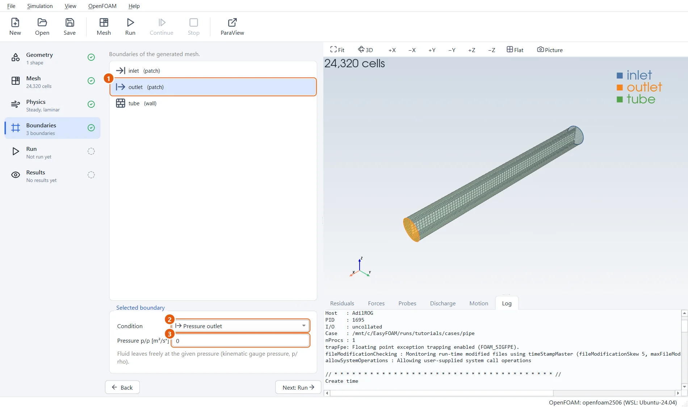
9Run until it has converged
Instead of guessing how many iterations are needed, give a generous limit and a target: the run stops by itself once every residual is below it.
- Iterations:
500, an upper limit. - Processor cores:
4. Use fewer if your computer has fewer. - Stop below residual:
1e-5. - Click Run in the toolbar (or press F6).

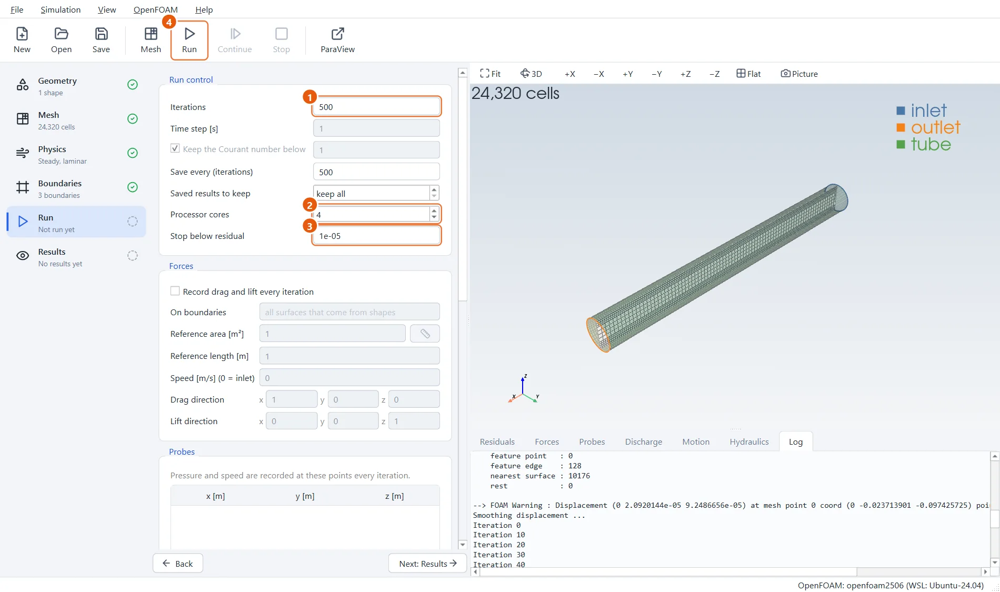
10Converged
The residuals fall steadily and the run ends well before the limit, as soon as the last of them passes the target.
- All four lines fall below 0.00001.
- The step shows at which iteration the run finished.

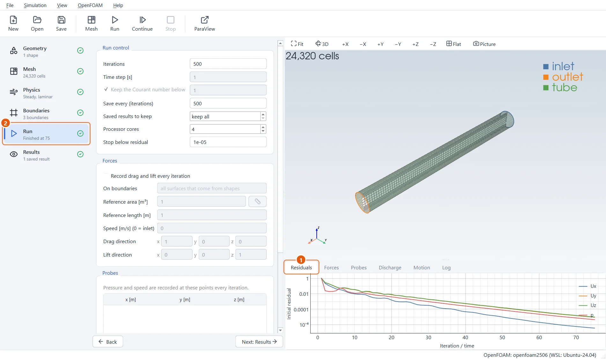
11The speed along the pipe
On a slice along the pipe you can watch the profile develop: flat at the inlet, then the fluid near the wall slows down and the middle speeds up, until the profile no longer changes.
Now the check. Theory says the middle ends up at twice the average speed, 2.0 m/s. The top of the colour scale reads about 1.93 m/s: within 4 % on this coarse mesh.
- Quantity:
U. - Slice plane: Normal to y.
- Click +Y to look at the slice from the side.

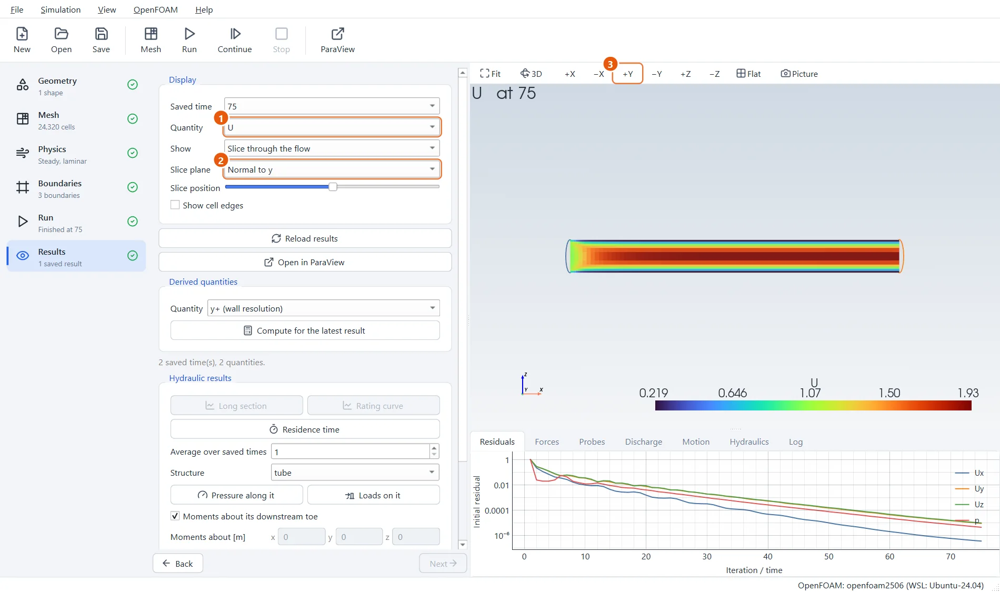
12The pressure drop
Switch the quantity to the pressure. It falls evenly along the developed part of the pipe. Theory gives 32 × viscosity × speed / diameter² = 32 × 0.004 × 1 / 0.04 = 3.2 per metre; the simulation gives about 3.15.
EasyFOAM shows the pressure divided by the density (in m²/s²). Multiply by the density, here 1000 kg/m³, to get pascals: 3200 Pa per metre.
- Quantity:
p.

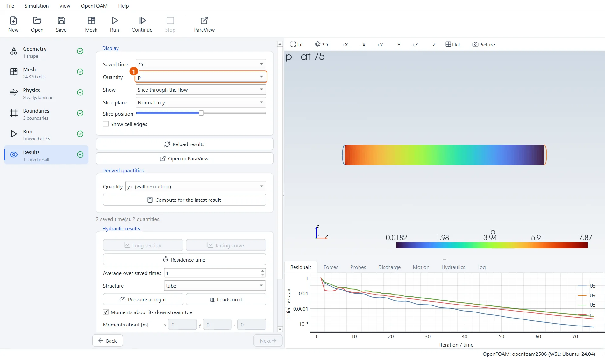
13Try it yourself
- Raise Surface refinement of the tube to
2and mesh again: the peak speed moves closer to 2.0. - Double the inlet speed. The pressure drop doubles too, as it must in laminar flow.
- Set the viscosity to
1e-6(water) and choose a turbulence model: the flat profile of turbulent pipe flow appears instead of the parabola.